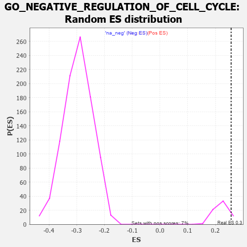

| | | Dataset | 7d |
| Phenotype | NoPhenotypeAvailable |
| Upregulated in class | na_pos |
| GeneSet | GO_NEGATIVE_REGULATION_OF_CELL_CYCLE |
| Enrichment Score (ES) | 0.25648203 |
| Normalized Enrichment Score (NES) | 1.1570787 |
| Nominal p-value | 0.07462686 |
| FDR q-value | 0.5308175 |
| FWER p-Value | 1.0 |
Table: GSEA Results Summary
 Fig 1: Enrichment plot: GO_NEGATIVE_REGULATION_OF_CELL_CYCLE
Fig 1: Enrichment plot: GO_NEGATIVE_REGULATION_OF_CELL_CYCLE
Profile of the Running ES Score & Positions of GeneSet Members on the Rank Ordered List
| PROBE | GENE SYMBOL | GENE_TITLE | RANK IN GENE LIST | RANK METRIC SCORE | RUNNING ES | CORE ENRICHMENT | | 1 | H2AX | | | 20 | 4.738 | 0.0537 | Yes |
| 2 | PCBP4 | | | 44 | 2.875 | 0.0849 | Yes |
| 3 | TEX14 | | | 164 | 1.179 | 0.0836 | Yes |
| 4 | BUB3 | | | 172 | 1.143 | 0.0963 | Yes |
| 5 | CDC45 | | | 239 | 0.950 | 0.0991 | Yes |
| 6 | INSM1 | | | 250 | 0.939 | 0.1090 | Yes |
| 7 | WEE2 | | | 333 | 0.766 | 0.1076 | Yes |
| 8 | CNOT7 | | | 348 | 0.750 | 0.1147 | Yes |
| 9 | HUS1 | | | 362 | 0.735 | 0.1218 | Yes |
| 10 | CLSPN | | | 379 | 0.719 | 0.1283 | Yes |
| 11 | BAX | | | 387 | 0.711 | 0.1358 | Yes |
| 12 | RRP8 | | | 403 | 0.699 | 0.1422 | Yes |
| 13 | NBN | | | 405 | 0.696 | 0.1503 | Yes |
| 14 | EED | | | 409 | 0.690 | 0.1581 | Yes |
| 15 | RAD9A | | | 418 | 0.681 | 0.1652 | Yes |
| 16 | CNOT6 | | | 462 | 0.655 | 0.1675 | Yes |
| 17 | CDC20 | | | 480 | 0.644 | 0.1729 | Yes |
| 18 | THOC1 | | | 507 | 0.627 | 0.1770 | Yes |
| 19 | CNOT2 | | | 514 | 0.625 | 0.1837 | Yes |
| 20 | HTRA2 | | | 527 | 0.621 | 0.1895 | Yes |
| 21 | PRCC | | | 543 | 0.614 | 0.1949 | Yes |
| 22 | NLE1 | | | 565 | 0.609 | 0.1994 | Yes |
| 23 | CCNB1 | | | 581 | 0.601 | 0.2046 | Yes |
| 24 | RBL2 | | | 593 | 0.596 | 0.2103 | Yes |
| 25 | NDC80 | | | 616 | 0.590 | 0.2145 | Yes |
| 26 | CDK7 | | | 686 | 0.564 | 0.2124 | Yes |
| 27 | MRE11 | | | 693 | 0.560 | 0.2182 | Yes |
| 28 | CDC6 | | | 709 | 0.557 | 0.2229 | Yes |
| 29 | VASH1 | | | 712 | 0.556 | 0.2293 | Yes |
| 30 | RAD21 | | | 779 | 0.538 | 0.2272 | Yes |
| 31 | BLM | | | 804 | 0.531 | 0.2304 | Yes |
| 32 | RFWD3 | | | 843 | 0.521 | 0.2318 | Yes |
| 33 | RPA2 | | | 851 | 0.519 | 0.2370 | Yes |
| 34 | NSUN2 | | | 901 | 0.506 | 0.2367 | Yes |
| 35 | WDR6 | | | 916 | 0.504 | 0.2409 | Yes |
| 36 | PDCD4 | | | 941 | 0.497 | 0.2438 | Yes |
| 37 | MEN1 | | | 1003 | 0.483 | 0.2417 | Yes |
| 38 | PSMG2 | | | 1018 | 0.480 | 0.2456 | Yes |
| 39 | RAD51 | | | 1090 | 0.466 | 0.2420 | Yes |
| 40 | RINT1 | | | 1110 | 0.462 | 0.2451 | Yes |
| 41 | PSMD7 | | | 1152 | 0.454 | 0.2452 | Yes |
| 42 | TFDP1 | | | 1180 | 0.450 | 0.2471 | Yes |
| 43 | PSMD2 | | | 1181 | 0.450 | 0.2524 | Yes |
| 44 | RBBP7 | | | 1220 | 0.443 | 0.2528 | Yes |
| 45 | CDC73 | | | 1265 | 0.436 | 0.2523 | Yes |
| 46 | CNOT3 | | | 1274 | 0.435 | 0.2565 | Yes |
| 47 | CARM1 | | | 1413 | 0.408 | 0.2436 | No |
| 48 | RBX1 | | | 1445 | 0.401 | 0.2444 | No |
| 49 | TIMP2 | | | 1478 | 0.394 | 0.2450 | No |
| 50 | E2F4 | | | 1501 | 0.390 | 0.2468 | No |
| 51 | TAF6 | | | 1512 | 0.389 | 0.2501 | No |
| 52 | SDE2 | | | 1579 | 0.378 | 0.2462 | No |
| 53 | CDK4 | | | 1626 | 0.370 | 0.2447 | No |
| 54 | ORC1 | | | 1661 | 0.363 | 0.2446 | No |
| 55 | KMT2E | | | 1730 | 0.350 | 0.2401 | No |
| 56 | ESPL1 | | | 1734 | 0.349 | 0.2438 | No |
| 57 | MRNIP | | | 1743 | 0.346 | 0.2469 | No |
| 58 | WAPL | | | 1758 | 0.344 | 0.2492 | No |
| 59 | RAD17 | | | 1804 | 0.336 | 0.2474 | No |
| 60 | PSMD4 | | | 1811 | 0.335 | 0.2506 | No |
| 61 | MSH2 | | | 1819 | 0.334 | 0.2537 | No |
| 62 | PSMD6 | | | 1858 | 0.326 | 0.2527 | No |
| 63 | ZW10 | | | 1973 | 0.309 | 0.2417 | No |
| 64 | FOXO4 | | | 2004 | 0.304 | 0.2415 | No |
| 65 | BMP7 | | | 2107 | 0.290 | 0.2319 | No |
| 66 | JADE1 | | | 2141 | 0.286 | 0.2310 | No |
| 67 | PSME4 | | | 2143 | 0.285 | 0.2343 | No |
| 68 | DTL | | | 2154 | 0.284 | 0.2364 | No |
| 69 | CNOT4 | | | 2161 | 0.283 | 0.2390 | No |
| 70 | TIPRL | | | 2200 | 0.277 | 0.2374 | No |
| 71 | CDK2 | | | 2226 | 0.272 | 0.2374 | No |
| 72 | PSMF1 | | | 2251 | 0.268 | 0.2375 | No |
| 73 | MED25 | | | 2320 | 0.257 | 0.2319 | No |
| 74 | CDC5L | | | 2353 | 0.253 | 0.2308 | No |
| 75 | MIF | | | 2357 | 0.252 | 0.2334 | No |
| 76 | KAT2B | | | 2502 | 0.226 | 0.2176 | No |
| 77 | CDT1 | | | 2505 | 0.226 | 0.2200 | No |
| 78 | RAD1 | | | 2528 | 0.223 | 0.2198 | No |
| 79 | PSMD5 | | | 2560 | 0.218 | 0.2185 | No |
| 80 | VPS4A | | | 2654 | 0.205 | 0.2090 | No |
| 81 | EPC1 | | | 2663 | 0.204 | 0.2104 | No |
| 82 | MUS81 | | | 2673 | 0.202 | 0.2116 | No |
| 83 | CUL1 | | | 2735 | 0.193 | 0.2061 | No |
| 84 | TPRA1 | | | 2745 | 0.192 | 0.2072 | No |
| 85 | ATR | | | 2800 | 0.183 | 0.2025 | No |
| 86 | BRD7 | | | 3018 | 0.147 | 0.1764 | No |
| 87 | YAF2 | | | 3032 | 0.145 | 0.1764 | No |
| 88 | CUL4A | | | 3097 | 0.137 | 0.1699 | No |
| 89 | MDC1 | | | 3113 | 0.135 | 0.1695 | No |
| 90 | FOXN3 | | | 3159 | 0.129 | 0.1653 | No |
| 91 | ERN2 | | | 3160 | 0.129 | 0.1668 | No |
| 92 | PSMD9 | | | 3179 | 0.125 | 0.1660 | No |
| 93 | FZR1 | | | 3205 | 0.122 | 0.1642 | No |
| 94 | EME1 | | | 3246 | 0.114 | 0.1605 | No |
| 95 | SMAD3 | | | 3303 | 0.105 | 0.1545 | No |
| 96 | CHFR | | | 3335 | 0.099 | 0.1517 | No |
| 97 | GAS2 | | | 3392 | 0.090 | 0.1456 | No |
| 98 | PTPRK | | | 3454 | 0.084 | 0.1388 | No |
| 99 | CNOT1 | | | 3473 | 0.081 | 0.1375 | No |
| 100 | CDK5 | | | 3480 | 0.080 | 0.1376 | No |
| 101 | XPC | | | 3509 | 0.076 | 0.1350 | No |
| 102 | DMRT1 | | | 3546 | 0.068 | 0.1312 | No |
| 103 | LCMT1 | | | 3576 | 0.063 | 0.1282 | No |
| 104 | WAC | | | 3618 | 0.056 | 0.1236 | No |
| 105 | SKP1 | | | 3663 | 0.049 | 0.1185 | No |
| 106 | NEK2 | | | 3871 | 0.016 | 0.0922 | No |
| 107 | HINFP | | | 3920 | 0.006 | 0.0861 | No |
| 108 | TOP2B | | | 3938 | 0.005 | 0.0840 | No |
| 109 | PPM1A | | | 3953 | 0.002 | 0.0822 | No |
| 110 | SYF2 | | | 4008 | -0.009 | 0.0754 | No |
| 111 | MCPH1 | | | 4039 | -0.014 | 0.0717 | No |
| 112 | MTOR | | | 4114 | -0.025 | 0.0625 | No |
| 113 | ABL1 | | | 4125 | -0.027 | 0.0616 | No |
| 114 | RRAGD | | | 4183 | -0.039 | 0.0547 | No |
| 115 | RRAGA | | | 4223 | -0.046 | 0.0503 | No |
| 116 | RPTOR | | | 4252 | -0.050 | 0.0473 | No |
| 117 | PCID2 | | | 4258 | -0.051 | 0.0472 | No |
| 118 | PSME3 | | | 4280 | -0.056 | 0.0452 | No |
| 119 | ERCC6 | | | 4464 | -0.087 | 0.0228 | No |
| 120 | ILK | | | 4510 | -0.096 | 0.0182 | No |
| 121 | PINX1 | | | 4515 | -0.097 | 0.0188 | No |
| 122 | APC | | | 4558 | -0.107 | 0.0147 | No |
| 123 | GATA3 | | | 4614 | -0.120 | 0.0091 | No |
| 124 | NUDT6 | | | 4682 | -0.135 | 0.0021 | No |
| 125 | TAOK3 | | | 4823 | -0.162 | -0.0139 | No |
| 126 | TIPIN | | | 4839 | -0.166 | -0.0139 | No |
| 127 | DLG1 | | | 4860 | -0.169 | -0.0144 | No |
| 128 | CBX3 | | | 4923 | -0.183 | -0.0202 | No |
| 129 | ATRX | | | 4929 | -0.184 | -0.0187 | No |
| 130 | SUZ12 | | | 4931 | -0.185 | -0.0166 | No |
| 131 | EP300 | | | 4941 | -0.186 | -0.0155 | No |
| 132 | PRKDC | | | 4955 | -0.189 | -0.0150 | No |
| 133 | KLF4 | | | 5005 | -0.198 | -0.0189 | No |
| 134 | ING4 | | | 5084 | -0.221 | -0.0263 | No |
| 135 | IPO7 | | | 5142 | -0.236 | -0.0308 | No |
| 136 | IPO5 | | | 5207 | -0.248 | -0.0360 | No |
| 137 | ATM | | | 5210 | -0.249 | -0.0333 | No |
| 138 | TOP2A | | | 5216 | -0.250 | -0.0310 | No |
| 139 | PTEN | | | 5262 | -0.261 | -0.0337 | No |
| 140 | CDK1 | | | 5264 | -0.262 | -0.0307 | No |
| 141 | MAGI2 | | | 5295 | -0.269 | -0.0313 | No |
| 142 | LATS1 | | | 5412 | -0.298 | -0.0427 | No |
| 143 | PSMD1 | | | 5674 | -0.367 | -0.0718 | No |
| 144 | RING1 | | | 5856 | -0.420 | -0.0900 | No |
| 145 | STK11 | | | 5922 | -0.443 | -0.0931 | No |
| 146 | PCGF2 | | | 5943 | -0.451 | -0.0903 | No |
| 147 | SGSM3 | | | 5957 | -0.457 | -0.0865 | No |
| 148 | JMY | | | 6023 | -0.479 | -0.0891 | No |
| 149 | CALR | | | 6077 | -0.499 | -0.0900 | No |
| 150 | PLK1 | | | 6082 | -0.500 | -0.0846 | No |
| 151 | STK33 | | | 6124 | -0.512 | -0.0838 | No |
| 152 | TNKS | | | 6138 | -0.516 | -0.0793 | No |
| 153 | TFAP4 | | | 6254 | -0.556 | -0.0874 | No |
| 154 | SOX2 | | | 6477 | -0.652 | -0.1082 | No |
| 155 | MIIP | | | 6554 | -0.686 | -0.1098 | No |
| 156 | TPR | | | 6597 | -0.709 | -0.1067 | No |
| 157 | EGFR | | | 6708 | -0.765 | -0.1118 | No |
| 158 | DOT1L | | | 6939 | -0.897 | -0.1306 | No |
| 159 | NR4A1 | | | 7022 | -0.951 | -0.1298 | No |
| 160 | RBBP4 | | | 7123 | -1.010 | -0.1306 | No |
| 161 | CDK9 | | | 7266 | -1.138 | -0.1353 | No |
| 162 | OVOL1 | | | 7341 | -1.214 | -0.1304 | No |
| 163 | FBXL7 | | | 7380 | -1.245 | -0.1205 | No |
| 164 | CASP2 | | | 7442 | -1.322 | -0.1126 | No |
| 165 | NEK11 | | | 7579 | -1.521 | -0.1120 | No |
| 166 | PKD1 | | | 7628 | -1.611 | -0.0990 | No |
| 167 | MDM1 | | | 7691 | -1.742 | -0.0862 | No |
| 168 | CASP3 | | | 7747 | -1.902 | -0.0707 | No |
| 169 | PKD2 | | | 7822 | -2.167 | -0.0545 | No |
| 170 | PSMD3 | | | 7907 | -2.887 | -0.0309 | No |
| 171 | PSMD8 | | | 7931 | -3.286 | 0.0051 | No |
Table: GSEA details [plain text format]

Fig 2: GO_NEGATIVE_REGULATION_OF_CELL_CYCLE: Random ES distribution
Gene set null distribution of ES for GO_NEGATIVE_REGULATION_OF_CELL_CYCLE